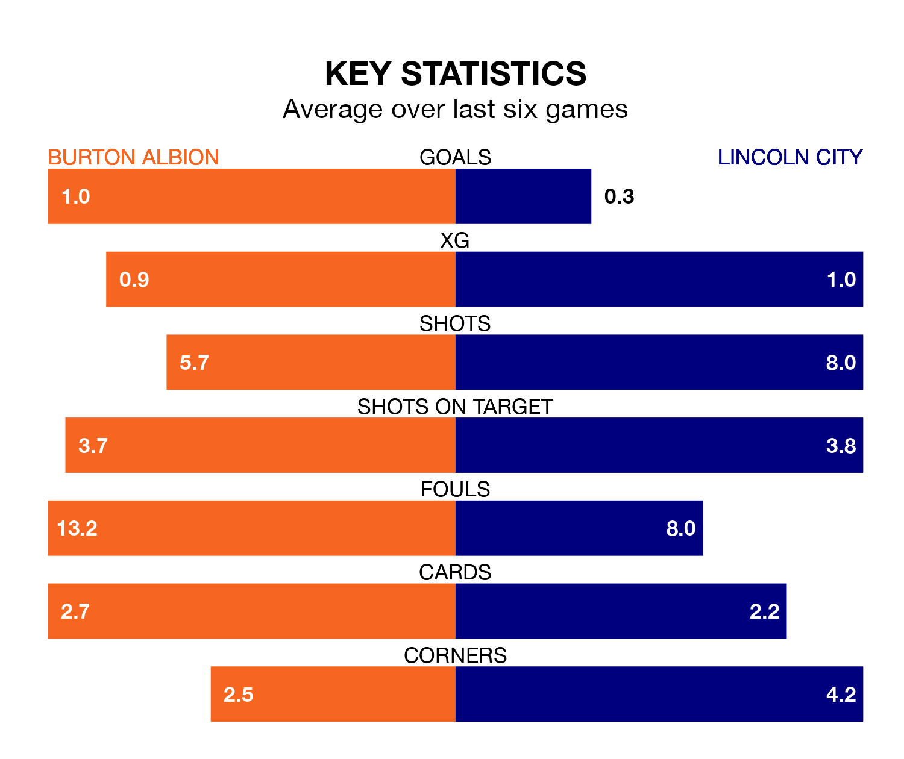

Lincoln City travel to the Pirelli Stadium looking to secure a first win in 10 EFL League One games against Burton Albion on Saturday.
The Imps have lost four and drawn five matches since they last earned three points – against Cambridge United on November 28.
They face a Burton side who have won three and drawn three over that time.
In the last 10 years, Burton and Lincoln have played each other on nine occasions. Burton won four of them and Lincoln five.
On average, the Brewers scored 1.2 goals and the Imps 1.6 in those matches.
Their last meeting was on October 14, when Burton won 1-0 away.
With Lukas Jensen between the sticks, Lincoln can rely on one of the league's safest pair of hands. He has kept 10 clean sheets in his 29 appearances this season in EFL League One.
In Burton's net, Maxime Teremoana Crocombe has eight clean sheets in 27 games. He has conceded a goal every 78 minutes, 20% more often than the 97 minutes between goals for Jensen.
With 25 goals in 29 games so far this season, Albion are scoring at below the league average rate with 0.9 goals per game. And they are conceding at an average rate, letting in 38 goals at a rate of 1.3 per game.
City are also below average scorers, with 1.0 goal per game, compared to a league average of 1.3. They have also conceded 1.0 goal per game.
The Brewers are 17th in the table after 29 games, of which they have won eight and drawn eight, earning 32 points.
The Imps are four places ahead of the home team in 13th, with eight wins and 11 draws putting them on 35 points.
Burton's last match was on January 27, a 0-0 draw against Cambridge United.
Lincoln drew 0-0 with Peterborough United last time out, also on January 27.
Saturday's match will be refereed by Jeremy Simpson, who has taken charge of two EFL League One games so far this season, issuing no red cards and booking 12 players. He has not awarded any penalties.
The last Lincoln game Simpson refereed was the 1-1 draw away at Exeter City on October 28. He is yet to oversee a match featuring Burton this season.
Updated: 10:40 (UTC), 01/02/24